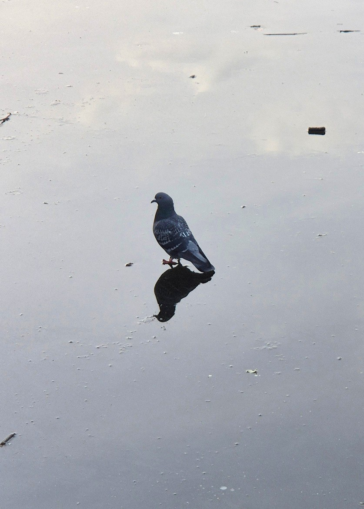

MOOWS / Issue 01 · August 2026
Interview with a pigeon
I: Thank you for taking the time to chat, I’m sure your day is really busy.
P: Coo coo. Coo coo!
I: Let’s get to it then. As you may know, lack of self-report in non-human animals has historically been considered an obstacle to the study of animal consciousness. Today, I want to move past this obstacle and get your thoughts on all things concerning the pigeon-mind directly from you. It’s your perspective that matters and that I am interested in your representing as faithfully as I can.
P: Coo coo, coo coo coo coo coo.
I: What would you say are the biggest differences bet-ween the mind of a pigeon and that of a human?
P: I do not presume to know the mind of a human. I can tell you some things about the way my kind tend to think, and you may judge the difference.
I: Let’s start with the obvious then. Pigeons, like all birds, are what’s called “natural split brains”– your two brain hemispheres aren’t connected like they are in humans. Some philosophers argued that cutting the corpus callosum – the nerve bundle connecting the hemispheres in humans – might even create two separate streams of conscious experience, and possibly two distinct subjects in one skull. What do you think of this idea – that a split brain can house two subjects in one head?
P: Yes, our natural circumstance is definitely a case of two subjects of pigeon-thought sharing one pigeon-head. You may notice that I’m looking at you with my left eye as we’re talking. If I were to turn to you with my other eye – my other inner pigeon might take over and you’ll have to start the interview all over again. I don’t really have my other internal pigeon’s memories either, though I always manage to catch up on everything that matters to me, like whether and where we had breadcrumbs today.
I: Have you watched the series called “Severance”? It spiked quite an obsession among the philosophically minded crowd for the puzzle it presents about the questions of identity and psychological continuity in people. Two pigeons sharing one brain and body reminds me of Severance’s “Innie” and “Outie”.
P: We actually do not watch much TV or cinema, since most of it is shot in 24 frames per second. This may suffice for the human brain to create an illusion of moving pictures, but for us – at least 75 frames per second are required. For this reason, we only started watching movies like a decade ago, and it’s still largely like flipping a picture deck at a family gathering. Remains a niche attraction. We’re really into videogames though, that industry serves us well.
“COO-COO”
I: Fun, what kind of videogames do your folks like to play?
P: Any kind really but we’re especially big on shooter games, those are so much fun! Not the tactical shooters though, these require more teamwork. I’d say pigeons aren’t too keen on cooperation in general, truth be told. Everyone cares about their own interest, even if it means stepping on your neighbour’s throat.
I: Would you say that “homo homini lupus est ” applies to pigeons?
P: Of course not, that’s about wolves and men. And I’m not sure what exactly the similarities between wolves and men are – I suppose they are much closer phylogenetic relatives than pigeons and wolves, or pigeons and men – I would choose the famous “ ”.
columbus columbi columbus est
I: This makes me want to turn to the question of intelligence. Some believe that real, general intelligence – the flexible kind, not just clever tricks – requires the capacity to understand metaphor. Care to comment?
P: Coo coo coo. Coo coo, coo. Coo coo coo coooo coo coo, coo. Coo, coo coo coo coo coo coo coo, coo coo cooo coo! Coo coo. Coo coo coo. Coo coo coo.
Coo. Coo coo coo coo coo coo coo coo cooo coo coo, coo coo coo coo.
I: Ok, let me ask you this. Do yyoouu believe you are conscious? And how do you know if you are?
P: I had this dream the other night. My brother, who I used to share the nest-bed with when we were chicks, is violently coughing. We are both chicks again, sitting in our awkward, uncomfortable nest. In that moment, in the dream, I realise that this malaise has fallen upon him in childhood and that it will never let go, though it will remain invisible to others, and maybe even to him. I know he will eventually succumb to it, though many years will pass before he lets go. I am heartbroken, and I feel helpless. So, I ask him: “Have you seen the sunlight shine through the trees on an early morning?
Have you ffeelltt the grass breathe and yourself dissolve in that breathing? Have you nnoottiicceedd how beautiful breadcrumbs are when they fall?” I want to reassure him, or maybe to reassure myself, that if he has – his life was full and beautiful and worth it, despite the malaise. I suppose those moments I recounted to him in the dream are the ones when I feel most present and most alive, and experience everything in the strongest.
I: To be honest with you, I find it quite irritating when people share their dreams with me – I’m not some kind of dream-interpreter. I am here to understand how we can study animal consciousness scientifically.
Seems like we haven’t covered much ground on consciousness, but this is understandable, as this is a field of inquiry in its infancy! Thank you for taking the time again, I mostly enjoyed our chat.
P-left hemisphere: Hey, how are ‘ya?! What’s good, got any breadcrumbs?!
I: Shooo!!! Get away from me, you winged rat!!!
I wondered how long he’d be able to stay with his left eye turned to me. An admirable self-control for a creature with a brain the size of a peanut, and half of it at that!
